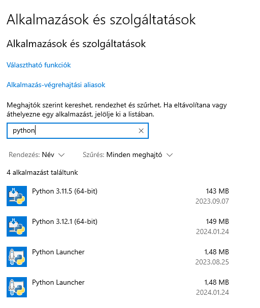

Gépház --> Alkalmazások --> Keresés --> Python
1. Parancssor futtatása rendszergazdaként
2. Az alábbi sor bemásolása és futtatása
py -m pip install -U pygame --user
Az alábbi linken minden szükséges információt megtalál:
https://www.youtube.com/watch?v=RHQfonGJ3A4&list=PL682eZbSNpGes-31kuQjY01bnKsCI4vDO&index=3&ab_channel=suliPY
Nyiss bármilyen alkalmazást, amelyet programozásra használsz. Improtáld be a pygame modult (import pygame). Futtasd a programot.
Ha megkapod azt a sort hogy: Hello from the pygame community. https://www.pygame.org/contribute.html akkor jól dolgoztál.